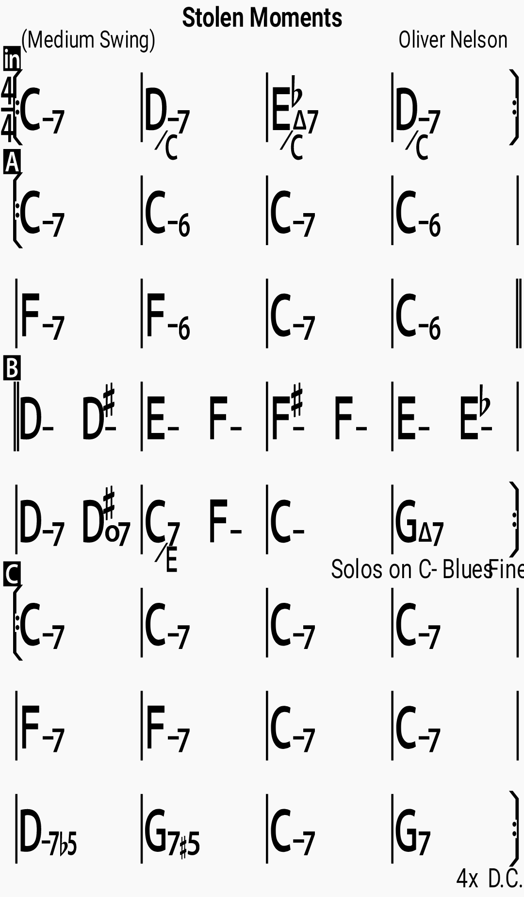

Chords

Lyrics
How I miss all our stolen little moments The many times I'm not with you They are such precious stolen moments That are meant only for us two Whenever you're gone and I know you're not here It's so hard to remember when you disappear With your face always there, right in front of me dear But you belong to her, but you belong to her Why do we have to have stolen moments Why can't I always have you near Holding you in my arms forever When I never have anything Whenever you're gone and I know you're not here It's so hard to remember when you disappear With your face always there, right in front of me dear But you belong to her I have heard when you have stolen moments It is called an affair I don't want to have just stolen moments So be mine and I'll always care Whenever you're gone And I know you're not here It's so hard to remember, when you disappear with your face always there right in front of me, dear But you belong to her